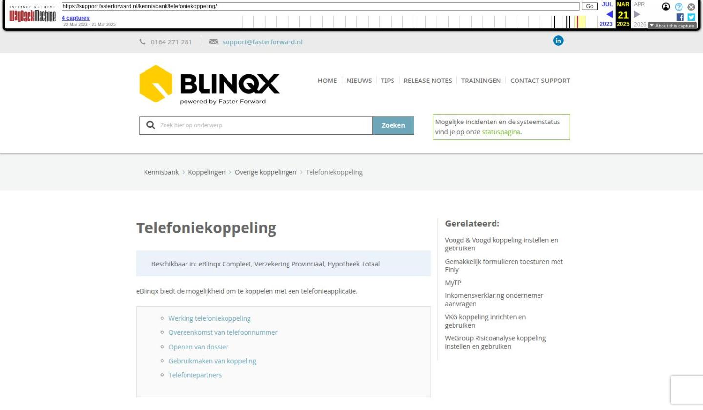

Telefoniekoppeling

Tekstinhoud
Telefoniekoppeling | Support
---
Telefoniekoppeling
Beschikbaar in: eBlinqx Compleet, Verzekering Provinciaal, Hypotheek Totaal
eBlinqx biedt de mogelijkheid om te koppelen met een telefonieapplicatie.
Werking telefoniekoppeling
Overeenkomst van telefoonnummer
Openen van dossier
Gebruikmaken van koppeling
Telefoniepartners
Werking telefoniekoppeling
Met de telefoniekoppeling wordt er direct een dossier geopend op het moment dat je wordt gebeld. Voorwaarde is dat de gebruiker ingelogd is in eBlinqx en dat de gebruikte browser (bijvoorbeeld Google Chrome), staat ingesteld als standaard browser. Er wordt namelijk een nieuw tabblad geopend.
Overeenkomst van telefoonnummer
Om te zorgen dat de koppeling werkt, moeten de telefoonnummers in eBlinqx en de telefonieapplicatie overeenkomen. Wanneer je wordt gebeld, wordt er namelijk gezocht naar een persoon of organisatie op basis van telefoonnummer.
Hierbij is belangrijk dat:
De persoon of organisatie moet gekoppeld zijn aan een dossier.
Je moet als gebruiker de rechten hebben op het betreffende dossier om het dossier te vinden.
Wanneer een nummer met landcode +31 in de telefoonapplicatie staat, moet deze ook met landcode in eBlinqx worden opgeslagen.
Openen van dossier
Wanneer één bijbehorend dossier is gevonden zal de browser direct dit dossier openen. Wanneer er geen of meerdere dossiers gevonden worden zal de dossierzoeker worden geopend. Hierbij zal in het veld telefoonnummer het meegegeven telefoonnummer worden gevuld. Alle dossiers waarin het telefoonnummer is gevonden worden weergegeven.
Gebruikmaken van koppeling
Voordat men gebruik kan maken van de koppeling moeten rechten ingesteld worden. Daarvoor stuur je een e-mail naar support@fasterforward.nl.
Voor de koppeling met de applicatie dient in de telefonieapplicatie een URL gezet te worden.
Dit is in het algemeen:
https://klant.fasterforwardelements.nl/endpoints/phone/caller/variabele
Variabele: dit is de variabele van de betreffende applicatie die het telefoonnummer meegeeft naar eBlinqx.
Klant: hier vul je jouw omgevingsnaam in.
Telefoniepartners
Voor Swyx-it of 3CX kan je contact opnemen met één van onze partners:
Destiny: ga naar de website of bel +31 413 741 741
Ook is de telefoniekoppeling met KPN1 mogelijk.
Laatste update: 27 augustus 2024
Was deze informatie nuttig?
Ja Nee